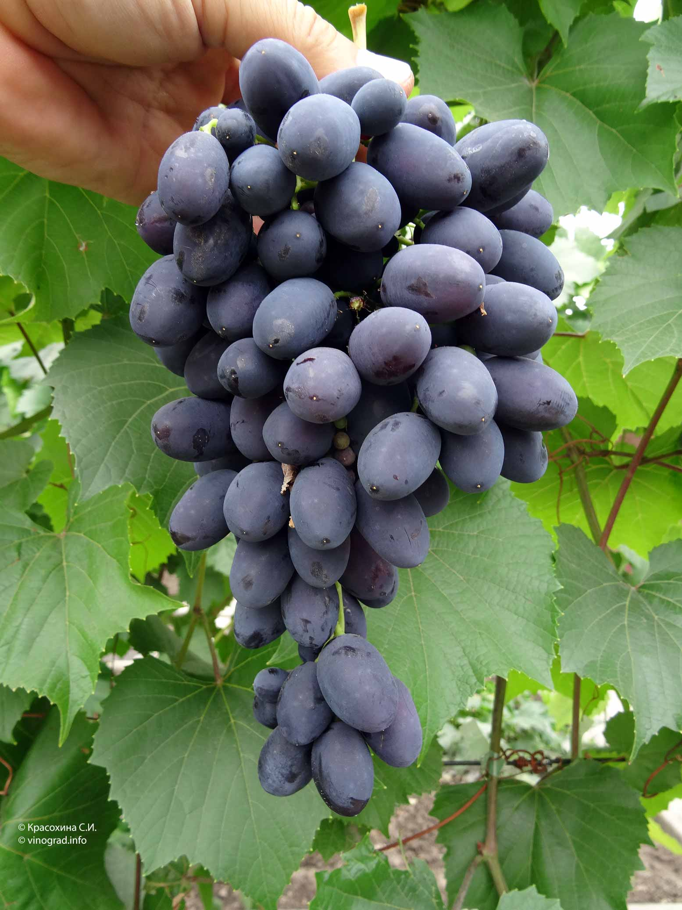
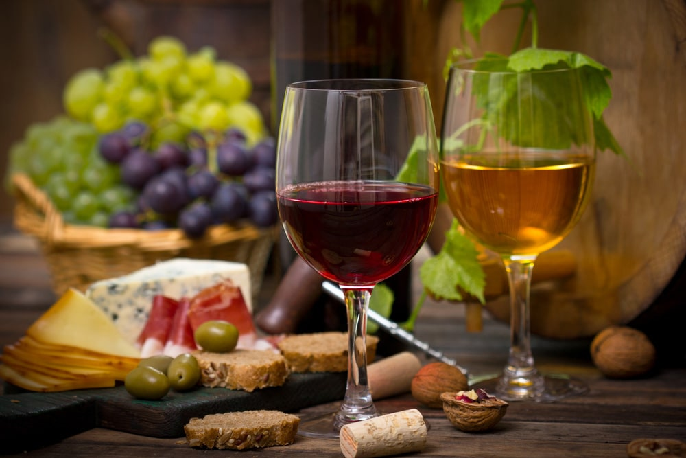

Вино . Определение свойств вина .


Важен выбор бокала. Бокал должен суживаться кверху, чтобы букет вина мог сконцентрироваться над поверхностью вина. Бокал должен быть чистым – в нем не должно быть несвежих запахов от буфета или от небрежного мытья и протирания.
Вина в бокал наливают не более чем на /, чтобы оставалось место, где букет вина мог бы распространиться. Однако и меньше наливать нельзя, иначе вино не даст достаточно аромата.
Проверка вина с целью определить его достоинства включает в себя определение внешнего вида и запаха так же, как вкуса. Выполняя последовательность операций и обдумывая по очереди каждое впечатление, дегустатор получает более полное представление о свойствах данного вина.
Анализ вина начинается с исследования его цвета. Вина могут содержать все цвета спектра, от синеватого оттенка, который придает молодым винам пурпурный цвет, до оранжевого тона, который в свое время может придать белому вину золотисто-медовый цвет; таким образом, цвет может указывать на его возраст.
Затем вино взбалтывают в бокале, нюхают и пробуют. Вино языком прокручивают во рту, чтобы оно достигло всех участков ротовой полости, способных различать вкус, т. е. нёба и нижней части языка.
Чувствительные по отношению к четырем основным вкусам рецепторы расположены на различных частях языка: сладость мы ощущаем на кончике языка, кислоту – на верхних его краях, соль – по бокам, а горечь – на спинке языка. Эти ощущения, связанные с запахами и другими возбудителями вкусовых ощущений, такими, как терпкость или бархатистая мягкость глицерина, пощипывание углекислого газа и обжигающее ощущение от спирта, создают вкус, или «рот» вина.
К Меценату
* * *
Будешь у меня ты вино простое
Пить из скромных чаш. Но его недаром
Я своей рукой засмолил в кувшин
В день незабвенный,
В день, когда народ пред тобой в театре
Встал, о Меценат, и над отчим Тибром
С ватиканских круч разносило эхо
рукоплесканья.
Цекубским вином наслаждайся дома
И каленских лоз дорогою влагой,—
У меня же, друг, ни Фалерн, ни Формий
чаш не наполнят.
1. Определяем цвет вина. Налейте вино в чисто вымытый бокал на одну треть. Держите бокал за ножку, чтобы не заслонять вино рукой, и наклоните его так, чтобы вы могли рассмотреть цвет вина, желательно против дневного света или на фоне белой скатерти. Рассмотрите вино и определите его оттенок, чистоту, глубину и интенсивность его цвета.
2. Болтаем вино в бокале. Держа бокал за ножку, осторожно поболтайте им по кругу, чтобы вино в бокале покружилось. Таким образом большее количество вина соприкоснется с воздухом, что поможет выявить свежий аромат молодого вина или многие летучие вещества, которые содержатся в букете более старого вина, так как они сосредоточатся наверху бокала.
3. Вдыхаем запах вина. Поднесите бокал к носу и сделайте короткий поверхностный вдох. Это выявит свежий фруктовый аромат молодого вина или более сложные оттенки запаха старого вина.
4. Всплесните вином в бокале. Если молодое вино не торопится выявить свой букет, всплесните им коротким резким движением. Такое действие поможет выявить фруктовый тон в аромате вина. Перед тем как попробовать вино, понюхайте его еще раз.
5. Отпиваем вино. Наклоните бокал и сделайте глоток достаточно большой для того, чтобы он покрыл язык, но так, чтобы во рту осталось достаточно места для воздуха.
6. Всасываем вино. Наклонив голову вперед, вытяните губы и вдохните воздух, пропустив его через вино во рту; язык держите напряженным. Выдохните воздух через нос, так, чтобы вкус и аромат вина распространились по всему нёбу.
7. Жуем вино. Губы сомкните, язык расслабьте, сделайте челюстями жевательное движение, так, чтобы вино распространилось по всей полости рта и было в соприкосновении с языком и слизистой нёба. После смакования вино можете проглотить или выплюнуть.
В первые моменты дегустации любого вина вы получите отчетливые впечатления от его аромата, вкуса и букета. Однако эти впечатления преходящи. Письменные заметки помогут вам запомнить каждое вино, которое вы пробуете, и они могут послужить вам указателем – покупать или не покупать такое же или похожее на него вино в будущем. Ваш винный журнал может иметь любую форму, какую вы пожелаете. Это может быть записная книжка. Запись должна быть ясной и последовательной, выполненной с использованием терминов, которые легко будет понять, когда вы обратитесь к этой записи позже.
Основную информацию, включенную в каждую запись, следует начинать с даты дегустации, названия вина и года сбора урожая. За этим следует описание внешнего вида вина, включая информацию о его возрасте и происхождении, о чем вам может рассказать цвет вина. Далее опишите ваши впечатления от вкуса и запаха вина и предложения, к каким блюдам это вино больше всего подойдет.